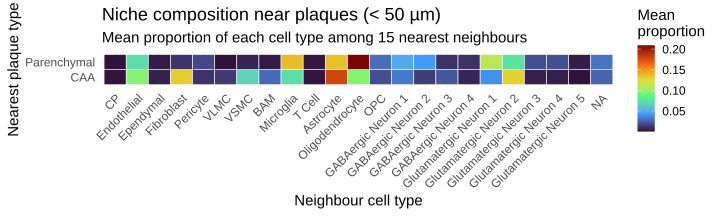

To characterise the global spatial organisation of cell types in amyloid-bearing mouse brain tissue, we asked which pairs of cell types co-localise more (or less) than expected by chance, independently of plaque proximity.
Cell-type proximity enrichment was computed using Giotto’s cellProximityEnrichment() function on the Delaunay spatial network: edges were classified as homotypic (same cell type) or heterotypic (different cell types), and enrichment scores were derived by comparing observed interaction frequencies against a null distribution generated by 1,000 label-permutation replicates, keeping cell coordinates fixed. This approach tests whether two cell types are spatially associated or segregated in the tissue, beyond what would be predicted from their overall abundances alone.
Code
CPscore_1 <-cellProximityEnrichment( giotto1,cluster_column ="annotatedclusters",spatial_network_name ="delaunay",number_of_simulations =1000)CPscore_2 <-cellProximityEnrichment( giotto2,cluster_column ="annotatedclusters",spatial_network_name ="delaunay",number_of_simulations =1000)# qs_save is not supported for the next objects# saveRDS(CPscore_1, "spatial/CPscore_1.rds")# saveRDS(CPscore_2, "spatial/CPscore_2.rds")
The co-localization network is a graph representation of the same proximity enrichment scores shown in the heatmaps above. Each node is a cell type; red edges indicate co-localization enrichment (the two cell types sit next to each other more often than expected by chance) and green edges indicate depletion (the two cell types avoid each other spatially). Edge thickness encodes the magnitude of the enrichment or depletion score. Self-loops denote homotypic clustering (a cell type clusters preferentially with its own kind).
Cell-type proximity enrichment analysis revealed a robust two-module spatial architecture that was highly consistent across both independent tissue sections (Slides 1 and 2).
Vascular/meningeal module. Border-associated macrophages (BAM), vascular leptomeningeal cells (VLMC), vascular smooth muscle cells (VSMC), fibroblasts, choroid plexus (CP), and ependymal cells were strongly and mutually co-enriched, forming a coherent perivascular/meningeal neighbourhood. Endothelial cells and pericytes co-localised with this vascular cluster and with astrocytes, consistent with the cellular composition of the neurovascular unit. T cells also associated with the vascular module, in keeping with their role in CNS border immune surveillance. Conversely, all vascular cell types showed significant co-localisation depletion with neuronal subtypes (strong blue off-diagonal bands in the heatmap), indicating physical segregation of the perivascular compartment from the parenchymal neuropil.
Neuronal/parenchymal module. The five glutamatergic neuron subtypes (Glutamatergic Neurons 1–5) and four GABAergic neuron subtypes (GABAergic Neurons 1–4) showed strong homotypic clustering and mutual heterotypic enrichment, reflecting the laminar and columnar organisation of cortical and hippocampal regions. Oligodendrocytes and OPCs co-localised with neuronal subtypes and with each other, consistent with their distribution along myelinated axonal tracts.
Microglia. Microglia occupied an intermediate position in the co-localisation network, showing moderate enrichment with multiple cell types but no strong preferential association with any single partner. This pattern is consistent with the dispersed, surveillance-mode distribution of homeostatic microglia throughout the parenchyma and is in agreement with single-cell studies showing that resting microglia do not form spatially restricted niches in normal brain tissue.
Niche composition near plaques
CAA and parenchymal plaques are distinguished histologically by their anatomical location, but whether they also differ in their surrounding cellular microenvironment at the single-cell level was unknown. To address this, we characterised the cellular niche of each plaque-proximal cell using a kNN-based composition approach: for every cell within 50 µm of a plaque, we identified its 15 nearest spatial neighbours and computed the proportion of each cell type among them. This yields a per-cell niche profile that can be averaged by plaque type and treatment group.
Code
compute_niche_composition <-function(seurat_obj, cell_distances, threshold =50) { proximal_info <- cell_distances |>mutate(nearest_type =if_else(dist_caa < dist_paren, "CAA", "Parenchymal"),min_dist =pmin(dist_caa, dist_paren) ) |>filter(min_dist < threshold)if (nrow(proximal_info) ==0) return(tibble()) coords <-GetTissueCoordinates(seurat_obj) |>as.data.frame() meta <- seurat_obj@meta.data |>as_tibble(rownames ="cell") all_mat <- coords |> dplyr::select(x, y) |>as.matrix() prox_idx <-match(proximal_info$cell, coords$cell) prox_idx <- prox_idx[!is.na(prox_idx)] nn_res <-nn2(data = all_mat, query = all_mat[prox_idx, ], k =16)map(seq_along(prox_idx), \(i) { neighbour_idx <- nn_res$nn.idx[i, -1]tibble(focal_cell = coords$cell[prox_idx[i]],neighbour_type = meta$annotatedclusters[neighbour_idx] ) }) |>bind_rows() |>count(focal_cell, neighbour_type) |># complete() fills zeros for cell types absent from a focal cell's neighbourhood,# so that mean(prop) downstream is an unconditional mean (includes zeros) rather# than a conditional mean over cells that had ≥1 neighbour of that type.complete(focal_cell, neighbour_type, fill =list(n =0L)) |>group_by(focal_cell) |>mutate(prop = n /sum(n)) |>ungroup() |>left_join( proximal_info |> dplyr::select(cell, nearest_type),by =c("focal_cell"="cell") ) |>filter(!is.na(nearest_type))}niche_1 <-compute_niche_composition(slide1, cell_distances_1)niche_2 <-compute_niche_composition(slide2, cell_distances_2)niche_all <-bind_rows(niche_1 |>mutate(slide =1L), niche_2 |>mutate(slide =2L))
Niche composition heatmap: CAA vs parenchymal
Code
niche_summary <- niche_all |>group_by(nearest_type, neighbour_type) |>summarise(mean_prop =mean(prop, na.rm =TRUE), .groups ="drop")niche_summary |>ggplot(aes(x = neighbour_type, y = nearest_type, fill = mean_prop)) +geom_tile(colour ="white") +#geom_text(aes(label = round(mean_prop, 3)), size = 2.5) +scale_fill_viridis_c(option ="turbo", name ="Mean\nproportion") +labs(title ="Niche composition near plaques (< 50 µm)",subtitle ="Mean proportion of each cell type among 15 nearest neighbours",x ="Neighbour cell type", y ="Nearest plaque type" ) +theme_minimal(base_size =15) +theme(axis.text.x =element_text(angle =45, hjust =1))

CAA and parenchymal plaques occupied distinct cellular microenvironments.
CAA-proximal niche. Cells within 50 µm of CAA plaques were markedly enriched for vascular and perivascular cell types: fibroblasts (mean neighbour proportion 0.131 vs. 0.012 for parenchymal; ~11-fold), vascular smooth muscle cells (VSMC; 0.067 vs. 0.006; ~10-fold), vascular leptomeningeal cells (VLMC; 0.014 vs. 0.001; ~23-fold), and border-associated macrophages (BAM; 0.028 vs. 0.003; ~8-fold). Endothelial cells were also proportionally higher near CAA (0.095 vs. 0.072). Together these data are fully consistent with the perivascular localisation of cerebral amyloid angiopathy: CAA deposits form within the vessel wall and are therefore structurally surrounded by the cellular constituents of the neurovascular unit. Astrocytes were the single most abundant neighbour cell type for CAA-proximal cells (0.178), reflecting their endfeet wrapping of cerebral blood vessels.
Parenchymal-proximal niche. In contrast, the immediate neighbourhood of parenchymal plaques was dominated by oligodendrocytes (0.209 vs. 0.095; ~2.2-fold), microglia (0.137 vs. 0.072; ~1.9-fold), and glutamatergic neurons, particularly Glutamatergic Neuron 1 (0.111 vs. 0.039; ~2.8-fold). Most glutamatergic subtypes were more abundant near parenchymal plaques. An exception was Glutamatergic Neuron 2, which was actually higher near CAA (0.129 vs. 0.074), likely reflecting its anatomical distribution in cortical layers near vessels. GABAergic neuron subtypes were also more represented near parenchymal plaques. This pattern is consistent with the diffuse deposition of parenchymal amyloid within the grey matter neuropil, which is densely populated by neurons, their myelin sheaths, and surveilling microglia.
Notably, the niche differences mirror the two-module co-localisation architecture identified by proximity enrichment above — CAA plaques sit within the vascular/meningeal module while parenchymal plaques are embedded in the neuronal/parenchymal module — providing orthogonal biological validation of the single-annotator ThioS plaque classifications used in this study.
When stratified by treatment, the overall niche structure was preserved in both groups; both CAA and parenchymal plaques retained their characteristic vascular and neuronal/oligodendroglial signatures, respectively. However, several cell types showed modest shifts in neighbourhood composition between aducanumab-treated and IgG-control animals.
Near parenchymal plaques, Adu-treated animals showed a modestly higher proportion of microglia (0.148 vs. 0.128; +16%) and oligodendrocytes (0.220 vs. 0.200; +10%) as neighbours of plaque-proximal cells, while GABAergic Neuron 1 (0.041 vs. 0.057; −28%) and Glutamatergic Neuron 2 (0.067 vs. 0.081; −17%) were proportionally lower.
Near CAA plaques, Adu-treated animals showed fewer Glutamatergic Neuron 2 neighbours (0.112 vs. 0.145; −23%) and more oligodendrocytes (0.110 vs. 0.082; +35%) and GABAergic Neuron 1 (0.044 vs. 0.022; +100%) relative to IgG controls, while fibroblasts were modestly lower (0.122 vs. 0.139; −12%).